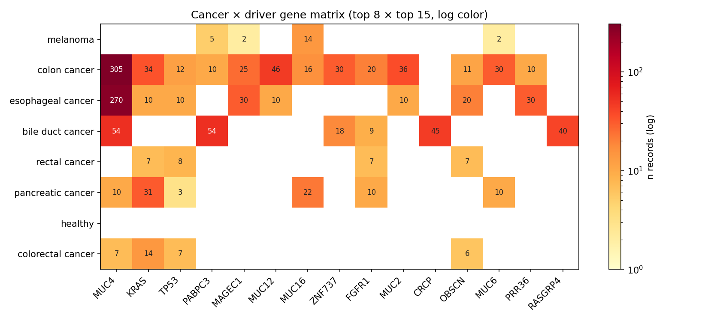

8 cancers × 15 driver genes — the 2D heatmap of where the corpus is rich vs sparse. Reveals colon cancer's broad gene representation (dominated by MUC4 + MAGEC1 + MUC12), pancreatic's KRAS-driven profile, and melanoma's MUC16 dominance.

Figure · log-color heatmap. White cells = no records.
| cancer ↓ / gene → | MUC4 | KRAS | TP53 | PABPC3 | MAGEC1 | MUC12 | MUC16 | ZNF737 | FGFR1 | MUC2 | CRCP | OBSCN | MUC6 | PRR36 | RASGRP4 |
|---|---|---|---|---|---|---|---|---|---|---|---|---|---|---|---|
| melanoma | — | — | — | 5 | 2 | — | 14 | — | — | — | — | — | 2 | — | — |
| colon cancer | 305 | 34 | 12 | 10 | 25 | 46 | 16 | 30 | 20 | 36 | — | 11 | 30 | 10 | — |
| esophageal cancer | 270 | 10 | 10 | — | 30 | 10 | — | — | — | 10 | — | 20 | — | 30 | — |
| bile duct cancer | 54 | — | — | 54 | — | — | — | 18 | 9 | — | 45 | — | — | — | 40 |
| rectal cancer | — | 7 | 8 | — | — | — | — | — | 7 | — | — | 7 | — | — | — |
| pancreatic cancer | 10 | 31 | 3 | — | — | — | 22 | — | 10 | — | — | — | 10 | — | — |
| healthy | — | — | — | — | — | — | — | — | — | — | — | — | — | — | — |
| colorectal cancer | 7 | 14 | 7 | — | — | — | — | — | — | — | — | 6 | — | — | — |